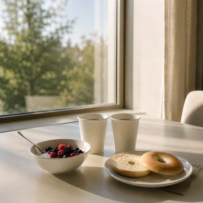

Some connections are built not through grand gestures or unforgettable events, but through the quiet rhythm of ordinary days. A shared meal, a familiar cup of tea, an easy conversation that lasts longer than expected — small moments that gradually become something worth holding onto.
“See You Tomorrow” reflects on a bond between two people living in different worlds, with miles between them and lives of their own to return to. There is no need to define what they have or ask it to become something else. The beauty lies in the time they share, the happiness they wish for each other, and the simple comfort of knowing they will meet again. And when those everyday moments eventually become memories, gratitude can be a gentler farewell than sadness.
Sometimes, being part of someone else's journey, even for a while, is more than enough.
I'm waiting here, waiting for your sign You text me "coming" right on time I step outside, right by the door We smile and walk down to the dining floor You grab the fruit and greens you always choose I find myself reaching for them too You pour the tea you always seemed to bring And somehow mine appears right next to me Noon comes around, you take a little break A quick healthy lunch, our usual way Nothing fancy, just a table for two Before I know it, I'm getting the same You head back up, another busy day I roam around while you're working away Still somehow the hours seem to fly Knowing we'll meet again by dinnertime Now comes the night, the best part of the day Dressed a little better than we need anyway The candles glow, the city's winding down A few good laughs are passing back around We talk for hours, though it feels like none The kind of time that's gone before it's done No grand event, no story to retell Just somehow everything fits really well Two different worlds, meeting for a while A couple thousand ordinary miles No need for more, no reason to pretend Some things are better left exactly as they've been If I could wish for anything for you I'd wish for days that make your dreams come true And getting to be part of this along the way Was more than enough for me "See you tomorrow," was the thing we'd always say Never making much of any day Maybe that's the reason it meant so much Nothing extraordinary, just enough You have your space, I have mine too A little distance helps us keep the view And every time we meet, it's still brand new Two different worlds, meeting for a while A couple thousand ordinary miles No need for more, no reason to pretend Some things are better left exactly as they've been If I could wish for anything for you I'd wish for days that make your dreams come true And getting to be part of this along the way Was more than enough for me Now we're leaving, heading different ways Back to our corners, back to our separate days "See you later" sounds about right No heavy goodbye, no final night Every meal and mile Every easy conversation and smile Yeah, that's enough for me Stay happy where you are